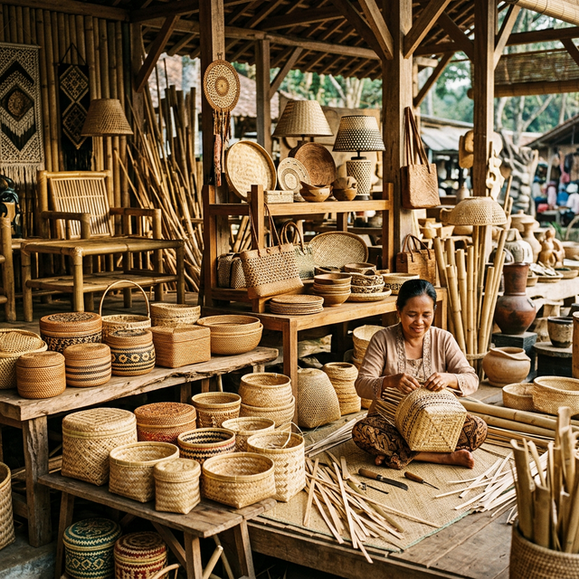
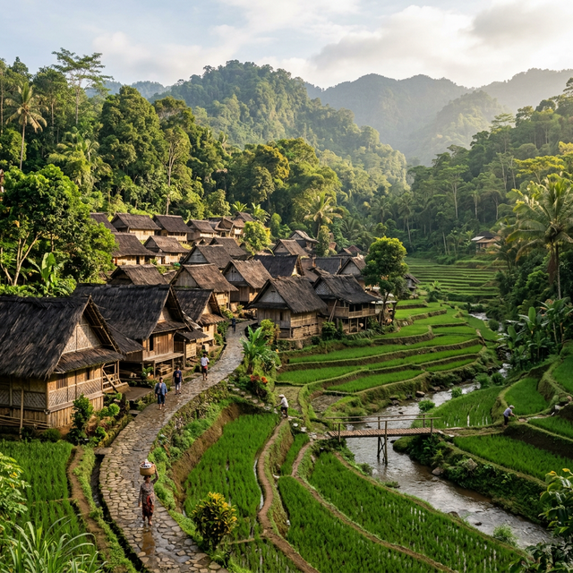
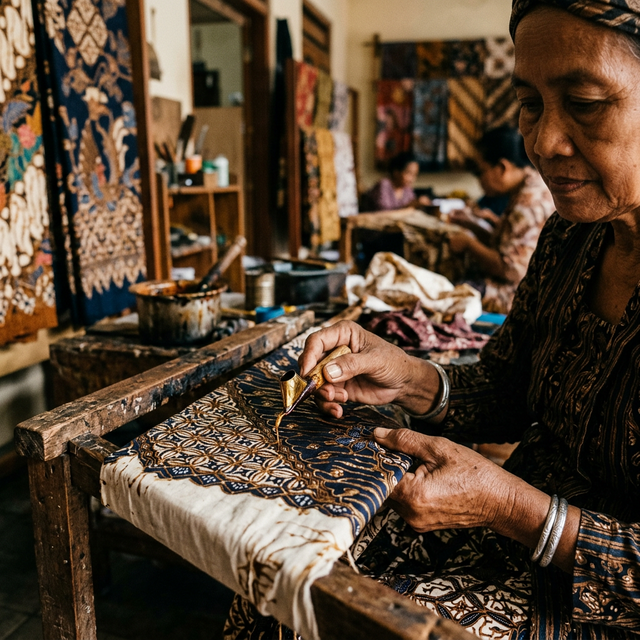
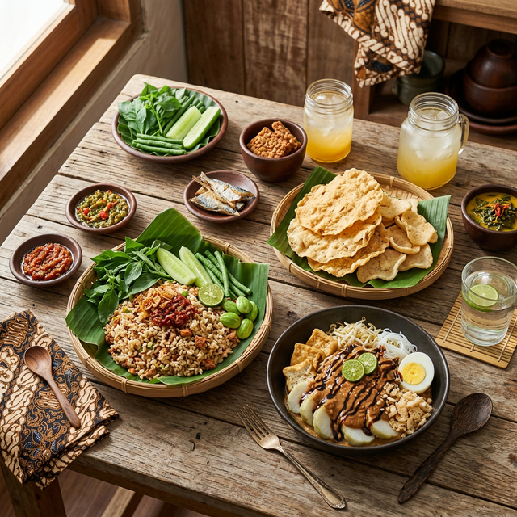
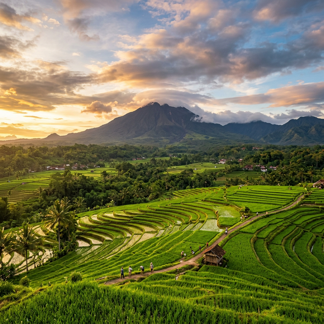

Tradition
Bamboo Craft Artistry
For generations, Tasikmalaya artisans have transformed humble bamboo into exquisite works of art — from intricate woven baskets to elegant furniture, recognized worldwide.
Nature • Culture • Heritage

Nestled in the heart of West Java, Kabupaten Tasikmalaya is a land of extraordinary natural beauty and profound cultural heritage. Home to the majestic Gunung Galunggung volcano, the pristine traditional village of Kampung Naga, and the stunning Pantai Cipatujah coastline, Tasikmalaya offers a journey through Indonesia's soul.
As one of Indonesia's emerging smart tourism destinations, Tasikmalaya blends centuries of Sundanese wisdom with modern digital innovation — preserving traditions while embracing the future.
Discover nature, culture, culinary gems, and craft villages across Tasikmalaya
Centuries of wisdom, artistry, and tradition woven into the fabric of daily life

For generations, Tasikmalaya artisans have transformed humble bamboo into exquisite works of art — from intricate woven baskets to elegant furniture, recognized worldwide.

Each stroke of the canting tool tells a story. Distinct patterns inspired by nature and spirituality reflect the deep bond between the Sundanese people and their land.
In villages like Kampung Naga, the philosophy of living in harmony with nature remains vibrant — ancestral customs and spiritual practices passed down through centuries.
Authentic Sundanese flavors that tell the story of this land

Steamed rice mixed with fermented soybean — a fragrant, umami-rich staple that is the heart of Tasikmalaya cuisine. Served with fried chicken and sambal.
Rice cakes with fried tofu, bean sprouts, and luscious peanut sauce. A beloved street food blending textures and flavors, found in every corner of the city.
Thin, crispy traditional crackers made from glutinous rice, sun-dried and roasted to perfection. A snack showcasing the elegance of Sundanese culinary artistry.
Supporting local economy through world-class craftsmanship
Handcrafted by master weavers of Rajapolah with patterns passed down for generations.
By Rajapolah Artisans
Hand-drawn batik with motifs inspired by the natural landscape of Tasikmalaya.
By Local Batik Masters
Unique handmade pieces combining traditional techniques with modern design sensibility.
By Tasikmalaya Craft Villages
Let our smart planner create the perfect itinerary for your Tasikmalaya adventure
Your itinerary will appear here
Select your preferences and generate!
Real insights powering smarter tourism decisions
